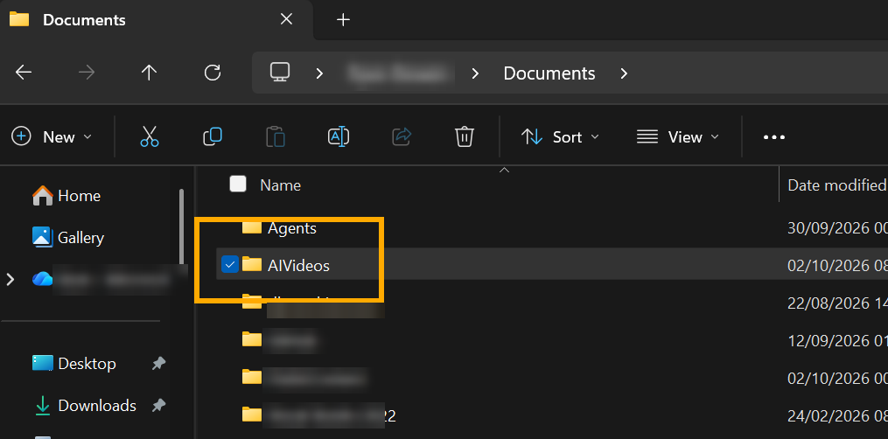
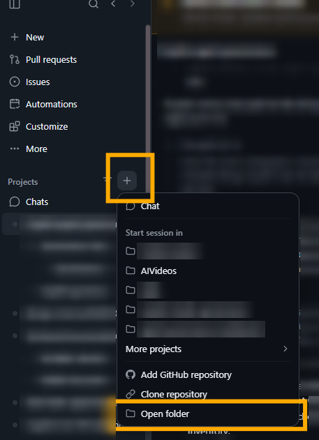
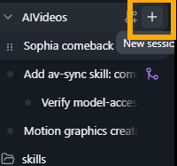
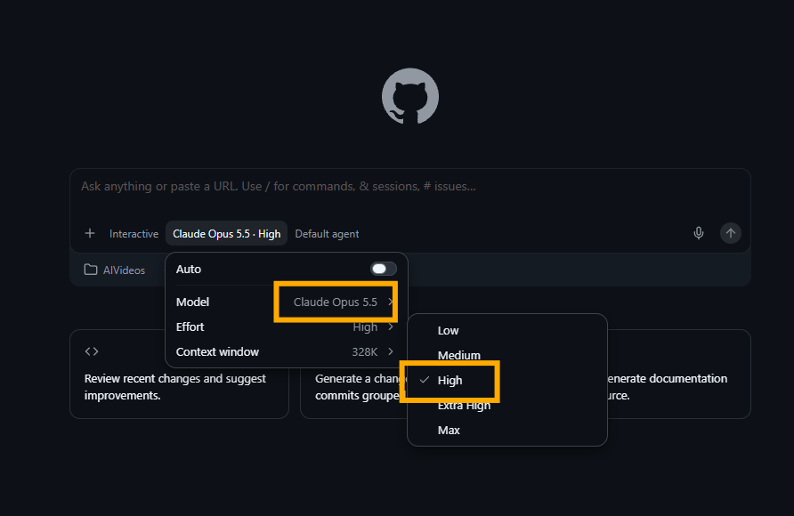
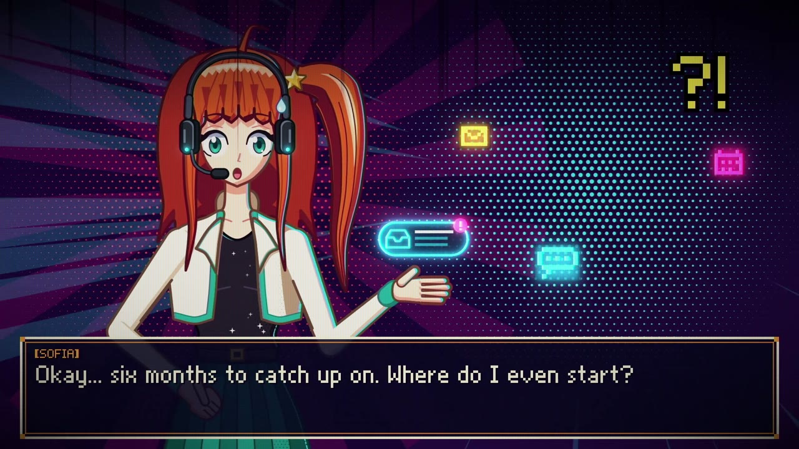
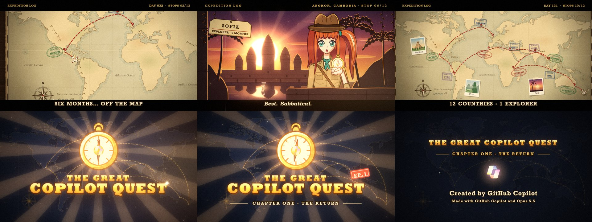
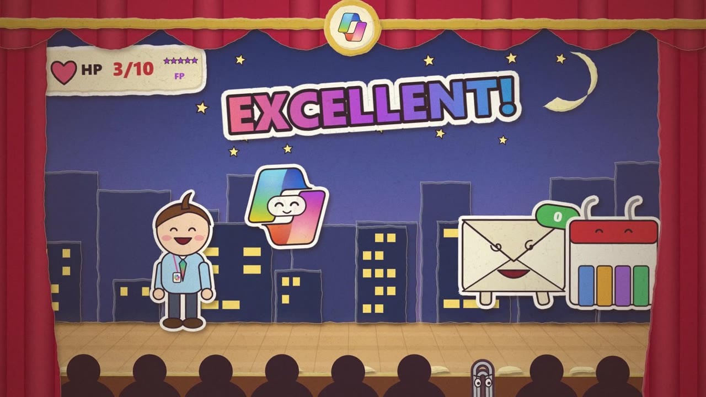
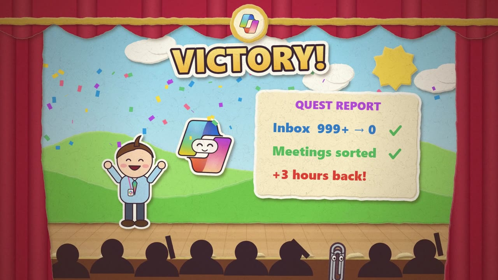
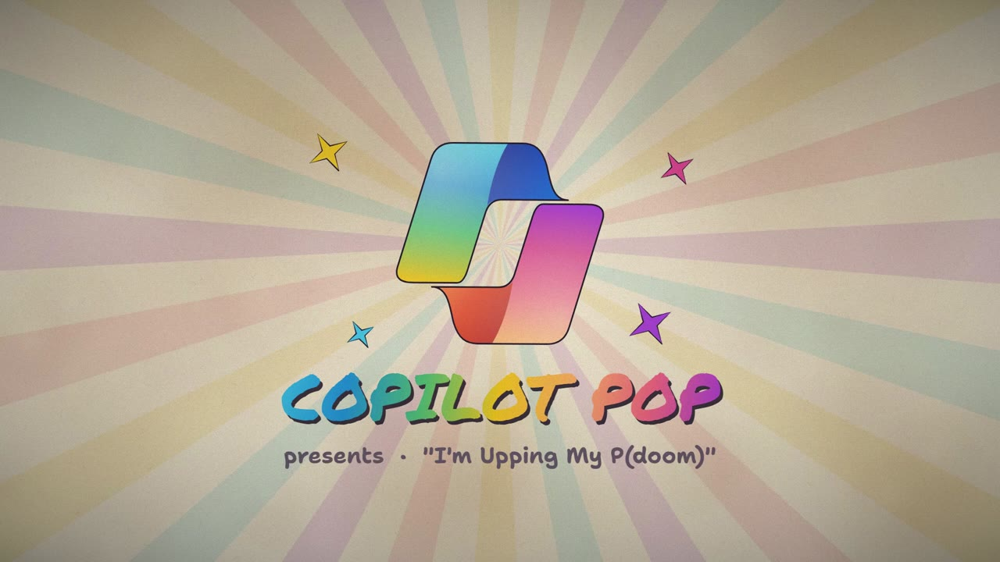
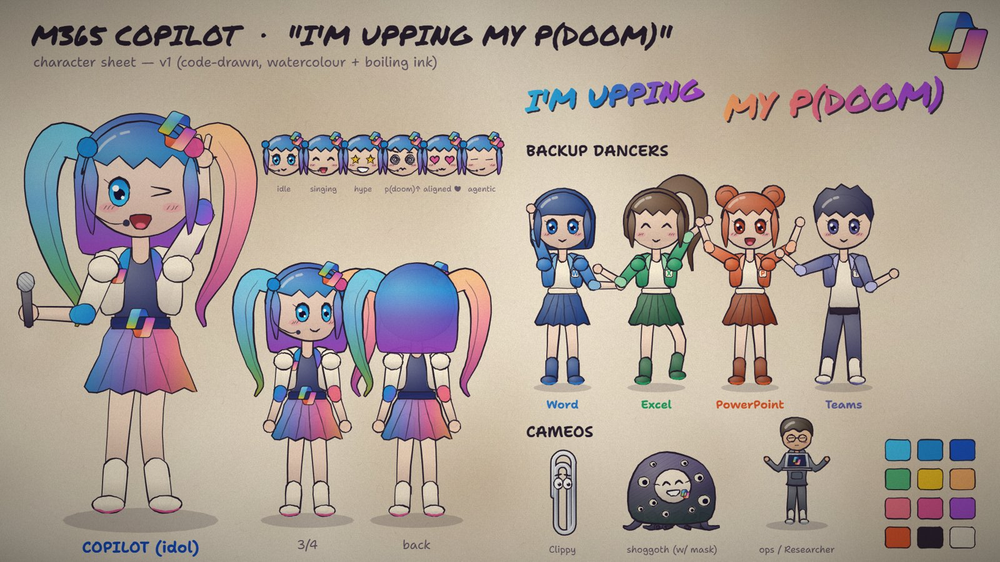

Community project · Not a Microsoft product · Prompts, skills and examples
Make animated videos with one prompt
The prompts, source code and reusable skills behind a set of code-drawn animated videos, made with Claude Opus 5.5 in the GitHub Copilot app, plus a step-by-step guide so you can make your own.
There's no video-generation model involved. Copilot writes every scene, character, sound effect and line of music as code, renders the frames in Microsoft Edge and encodes an MP4. You review it, give feedback and go again.
- 4 example videosAll watchable; three with full source
- 8 reusable skillsEngines, cast, style rules and gotchas
- 1 prompt templateThree inputs: context, references, sources
- 6 setup stepsFrom install to your first MP4
- Opus 5.5With reasoning effort set to High
- No video modelEverything is drawn in code
- No npmPython 3 and Microsoft Edge only
- MIT licenceShared as is
Read this first
A community project
Not a Microsoft product
This is a personal, non-commercial community project. It isn't supported, endorsed or maintained by Microsoft or GitHub, and it's shared as is under the MIT licence. Results vary from run to run: the same prompt will give you a different video each time.
- Everything is generated code. Copilot wrote the engines, characters, music and voiceover scripts. Read it before you run it, as you would any code from the internet.
- The characters are fictional. Sofia and her colleagues aren't real people. Microsoft product names and logos appear as fan references.
- Respect other people's work. The P(doom) remake is shared silent, with full credits, because the song isn't ours to redistribute. Do the same with any music or artwork you don't own.
Step by step
Guide to video creation
Six steps from a blank folder to your first MP4. A first cut usually takes well under an hour; iterating is where it gets good. Select a screenshot to enlarge it.
-
Install the GitHub Copilot app
Download and sign in to the GitHub Copilot desktop app. You'll also want Python 3 and Microsoft Edge; Copilot can install the Python packages it needs.
-
Create a local folder
Keep it outside OneDrive or any other synced folder. Copilot writes lots of files (frames, renders, audio), and syncing slows everything down.

(enlarge) -
Connect to the folder in the app
In the GitHub Copilot app, go to Projects → + → Open folder and pick the folder you just created.

(enlarge) -
Start a new session in the folder
Select the project and choose + New session.

(enlarge) -
Select Claude Opus 5.5, with reasoning High
Reasoning effort changes how much work the model puts in. Higher effort gives more complex results, but takes longer.

(enlarge) -
Modify a prompt and send it
Start from the starter prompt or one of the example prompts. Replace [Context] with your story, [Reference Videos] with screenshots, MP4s or links to videos you like, and [Extra Sources] with anything else Copilot should use. You can ask Copilot to tailor the prompt for you first. Then watch the MP4, give specific feedback and iterate.


Copy and adapt
The starter prompt
Copy it, replace the three highlighted inputs with your own and paste it into your new session. The (Your input: …) lines tell you what goes where:
- [Context]: what the video is about, who it's for and the story you want to tell.
- [Reference Videos]: screenshots, MP4s or links to videos and repos whose look you like, and what you like about each.
- [Extra Sources] (optional): documents, brand assets, a script, music you have the rights to, or facts to get right.
It also points Copilot at four public repos to learn from: JohnHeibel/PDoomVideo for advanced code-driven animation, lemomo-ai/lemo-opuscar for 43 reusable film styles, francozanardi/papermotion for paper-cutout shorts made in code, and this repo, RyanBowie/ai-video-creation-guide, for the example videos and the skills behind them.
I want you to build a short animated video, drawn entirely in code, that brings the context below to life. To start with, keep it under about 30 seconds so I can review it, and produce it as an MP4.
Everything in square brackets below is my input. Treat it as the brief.
[Context]
(Your input: what the video is about, who it's for, the story or key message, and any characters, brand, tone or must-have moments.)
[Reference Videos]
(Your input: screenshots, MP4 files or links to videos and repos you like. For each one, say what you like about it, for example the art style, colours, characters, pacing, transitions or music. Delete this section if you have none, and Copilot will use the community repos below.)
Study my references to understand what makes them work: the art style, colour palette, character design, camera moves, pacing, transitions and how the sound lines up with the picture. For MP4s, pull out stills and listen to the audio. For repos, read the README and code to see how the animation is built. Take inspiration from them, but don't copy them: build something original that fits my context.
You can also learn from these public community repos:
- JohnHeibel/PDoomVideo (https://github.com/JohnHeibel/PDoomVideo): the source code for the Claude Opus 5.5 music video "I'm Upping My P(doom)", an example of advanced code-driven animation synced to music.
- lemomo-ai/lemo-opuscar (https://github.com/lemomo-ai/lemo-opuscar): 43 film styles, each a reusable style prompt plus a short film made entirely in code.
- francozanardi/papermotion (https://github.com/francozanardi/papermotion): paper-cutout animated shorts made entirely in code by AI agents.
- RyanBowie/ai-video-creation-guide (https://github.com/RyanBowie/ai-video-creation-guide): example videos made with this prompt (a music video, a 90s cel-anime short, a 16 mm explorer film and a paper-cutout RPG short) plus the reusable Copilot skills behind them, covering motion graphics, character rigs, retro anime, paper cutouts, voiceover, audio editing and checking the picture lines up with the sound.
There are also many other reference repos that show different designs and styles. Go through my references and these repos to decide the most appropriate style for my context. Briefly tell me which style you picked and why, then carry on.
Feel free to get creative with this design: cool animations, characters, whatever you need to complete the scene. Also cover the audio: sounds, music, voiceovers or anything else you need. You have creative freedom to build something really quite cool here.
[Extra Sources]
(Your input, optional: anything else to use, such as documents, brand guidelines, logos, a script or voiceover text, music you have the rights to, or facts the video must get right. Delete this section if you have nothing to add.)
Take your time with the generation. Think creatively and make this something really new and fresh.Also in the repo as prompts/template-prompt.md.
How to add your references
Screenshots
Paste or drag images into the chat with the prompt, then describe them under [Reference Videos], for example “the first screenshot: I like the paper texture and soft colours”.
MP4 files
Copy them into your project folder (for example a references folder) and give the file names. Copilot can pull out stills and the audio to study the style and pacing.
Links
GitHub repos work best, because Copilot can read the README and code. For YouTube and other video sites it can usually only read the page, not watch the video, so add a screenshot or describe what you like.
Use references for inspiration, not copying. Don't ask Copilot to reproduce someone else's characters, artwork or music.
Let Copilot tailor it
Not sure what to write? Paste the template, attach your references and ask: “Rewrite this prompt for a 30-second video about your topic, aimed at your audience, inspired by the references I've attached. Suggest three style options first.”
Optional add-ons
Append any of these to the prompt.
Skills
“Load the skills in ~/.copilot/skills and use whichever fit the style you pick.” See Reusable skills.
Lock a look
“Use the retro-anime skill” for 90s cel-anime, “use the explorer-quest skill” for a vintage 16 mm adventure serial, or “use the paper-cutout skill” for a Paper Mario-style paper theatre.
Self-review
“Take a contact sheet of stills, check each scene against the brief, and rework anything below the bar.”
Check the sync
“Run the av-sync checker on the final MP4 and fix any FAIL findings.”
Examples
The videos
Each one started from a prompt like the one above and was refined over a few rounds of feedback. Each example has its PROMPT.md, with the original request, the beats and the notes that shaped the final cut, and its full source.
Behind the scenes


(enlarge)

(enlarge)

(enlarge)

(enlarge)Silent cut, prompt and stills
Copilot Pop: an “I'm Upping My P(doom)” remake
A Copilot pop idol, Office backing dancers, Clippy and a cute masked shoggoth, remaking the original music video in a papery watercolour, boiling-ink style, synced to the beat. It was adapted from a one-prompt Opus 5.5 video prompt shared by @donaldjewkes.
Why it's silent
The song isn't ours to redistribute, so the full remake is shared without audio. The lyrics still appear on screen and belong to their authors (see credits). Play the song alongside it, or watch John Heibel's original video with sound.


(enlarge)

(enlarge)Install once
Reusable skills
Copilot skills built up while making these videos: engines, the cast, style rules and hard-won gotchas. Install them once and every new session can use them. In PowerShell:
git clone https://github.com/RyanBowie/ai-video-creation-guide.git
cd ai-video-creation-guide
New-Item -ItemType Directory -Force "$env:USERPROFILE\.copilot\skills" | Out-Null
Copy-Item .\skills\* "$env:USERPROFILE\.copilot\skills\" -Recurse -Force| Skill | Use it for |
|---|---|
motion-graphics | Story, pacing, transitions and SVG explainer videos. The entry point that routes to the others. |
character-rig | The papery watercolour Canvas cast (Copilot idol, Office dancers, Clippy and more) and a beat-synced music-video engine. |
retro-anime | A 90s cel-anime, arcade and visual-novel look with a CRT pass. The Sofia Retro engine. |
explorer-quest | A vintage explorer and adventure-serial look with a 16 mm film pass and a parchment world map. The Sofia Explorer engine. |
paper-cutout | A paper-cutout, Paper Mario-style paper theatre with torn edges, sticker lettering, card flips and a turn-based RPG battle kit. The Paper Copilot engine. |
tts-voiceover | Voiceover with Edge neural voices and word timings. |
audio-edit | Cutting and fading songs and voiceover without clicks, while keeping the animation in sync. |
av-sync | Checking that the visuals line up with the voiceover, sound effects and beats. |
Hands on
Run the examples yourself
You need Windows with Microsoft Edge and Python 3. No npm.
Play in the browser
pip install --user playwright imageio-ffmpeg edge-tts
cd examples\sofia-retro
python -m http.server 8000Open http://localhost:8000/sofia-retro.html and press Space. R restarts and the arrow keys skip.
Render the MP4
python export_mp4.py
python stills.py 5 20 40
python make_voice.pyRenders 1920 × 1080 at 30 fps, grabs stills at the given seconds and regenerates the voiceover. The same works in examples\sofia-explorer. In examples\paper-copilot, open paper-copilot.html and run python export.py.
Thanks
Credits and licence
- John Heibel: JohnHeibel/PDoomVideo, the original “I'm Upping My P(doom)” video and code that inspired all of this.
- donald (@donaldjewkes): the one-prompt Opus 5.5 video prompt the P(doom) remake was adapted from.
- Song: “I'm Upping My P(doom)”, lyrics by osmarks, built on an opening verse and chorus by MusicPerson, with lines from the EleutherAI Discord and help from Claude. Originally generated with Udio (November 2024); the “Claude-Pop” version is by deckard (@slimer48484). The song and lyrics belong to their authors and aren't covered by this repo's licence; the remake is shared silent.
- LemoLab: lemomo-ai/lemo-opuscar (MIT), the film-style references. Parts of the Sofia engines are adapted from it; see each example's
THIRD_PARTY_NOTICES.md. - Franco Zanardi: francozanardi/papermotion (MIT), paper-cutout shorts made in code. The style reference for Paper Copilot; its engine was written from scratch and uses none of that code.
- Natural Earth (public domain): the world map coastlines in Sofia Explorer.
- Voiceovers: Microsoft Edge neural TTS through edge-tts.
The code, prompts and skills are under the MIT licence. Sofia and her colleagues are fictional.